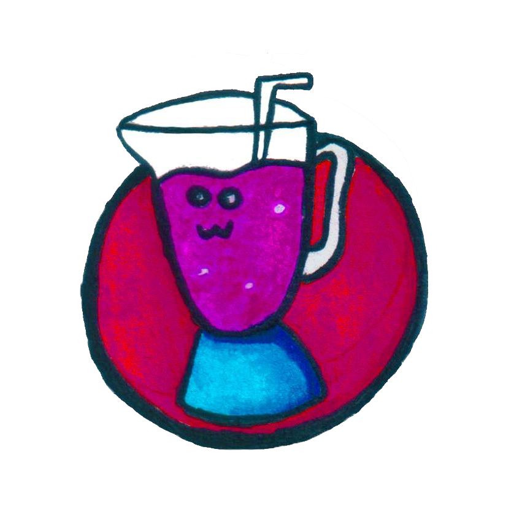
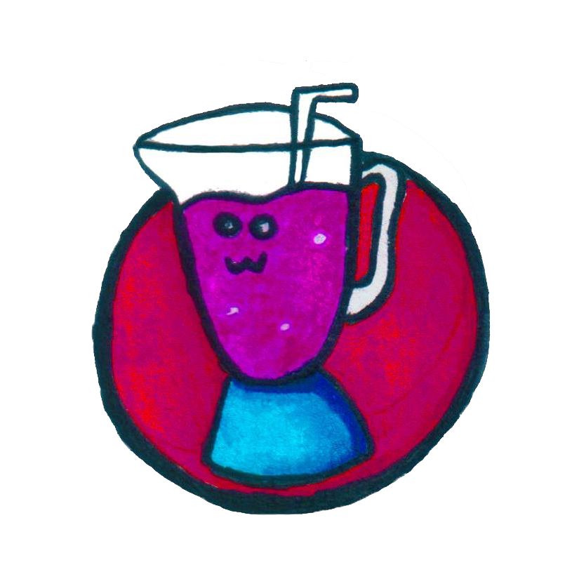
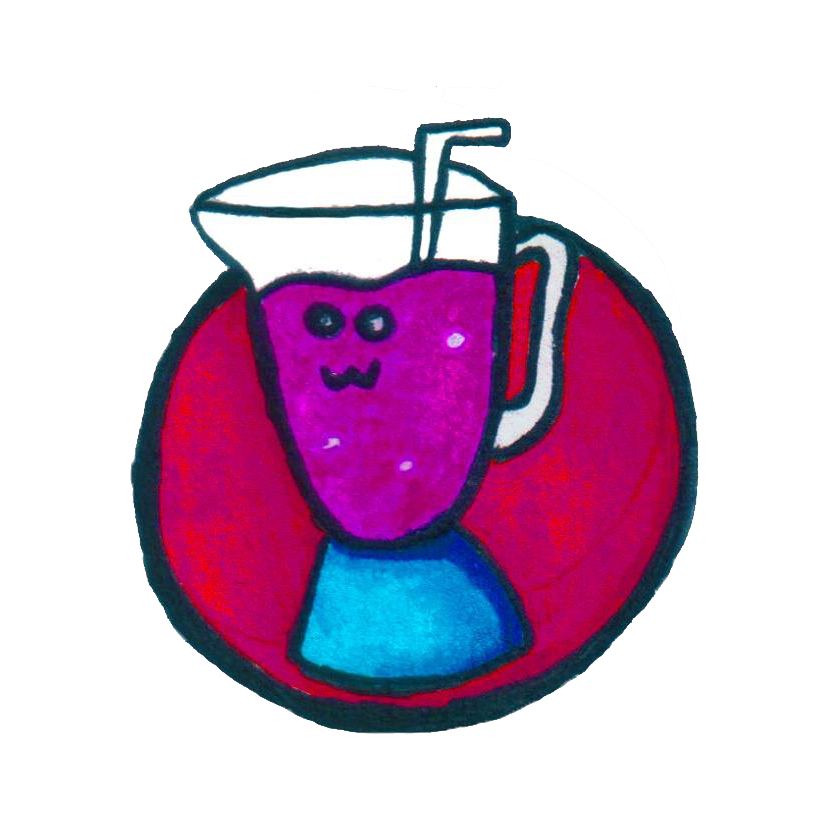
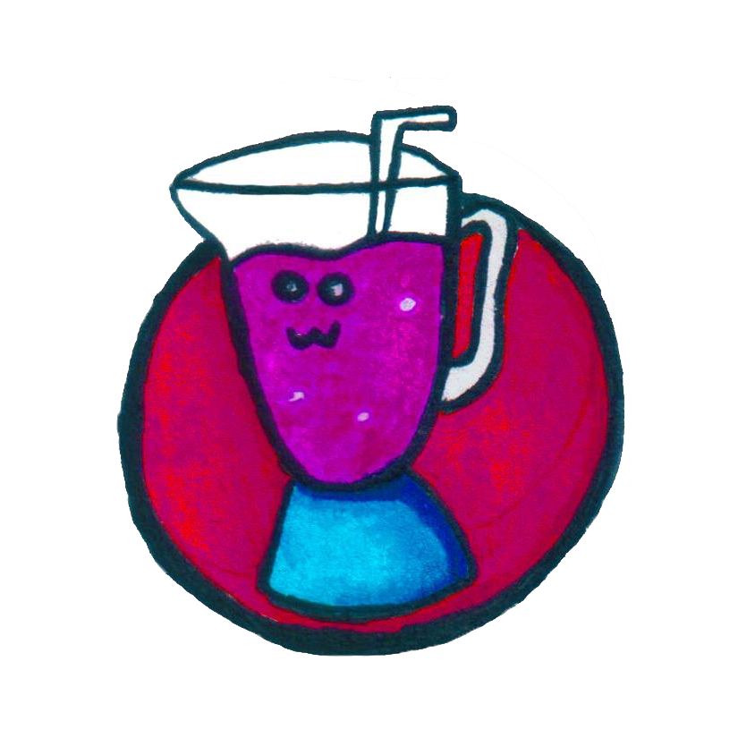

Final 25 Avenida Norte, San Salvador | Todos los Días 10AM-10PM
La empresa Twist surge después de un análisis de mercado en el que se observa como la necesidad y la creación de una venta de Licuados Naturales y además ofrecer un servicio especializado al cliente que a su vez genere empleo a personas de bajos recursos del entorno de la localidad en la que estamos ubicados. En la necesidad planteada encontramos una oportunidad para creación de la empresa que brinde un servicio y llene las expectativas de nuestros clientes. La empresa Twist mantiene una estructura organizacional definida que nos permite establecer una jerarquía adecuada para cada nivel de nuestra empresa y además una clara asignación de tareas para cada socio que desempeñan un papel importante para la supervivencia de la empresa.
Como mediana empresa se propone que los objetivos de mercadotecnia sean los de crear lealtad a largo plazo y posicionar a la empresa como primera opción dentro del mercado meta, mediante la repartición de publicidad dentro de los lugares cercanos al establecimiento, así como en las diversos centros de estudios existentes en San salvador.
Una de las bebidas que más gusta a chicos y grandes por su sabor y alto valor nutricional son los licuados, ya sea de frutas o verduras, cualquiera disfruta bebiéndolos a cualquier hora del día. Es por ello que Twist S.A. de C.V. Se toma la libertad de poder satisfacer lo que la sociedad necesita, nuestro producto será de gran ayuda ya que está altamente calificado por nutricionistas los cuales nos informaron a que nuestro producto satisfaga y ayude en la salud de nuestros clientes y al mismo tiempo se deleiten de un sabor único y delicioso.
En nuestra empresa de licuados contamos con nuestros empleados altamente calificados para brindar la mejor la atención a nuestros clientes, junto a ellos esta todos los socios en los cuales vemos que Twist, sea una empresa líder en el mercado.